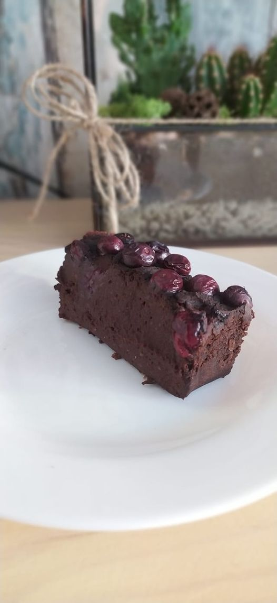
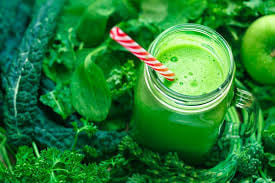
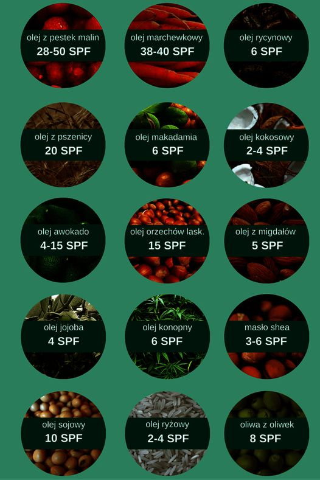
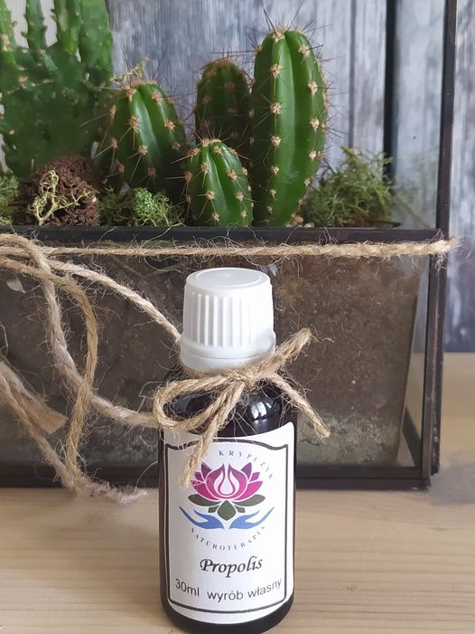
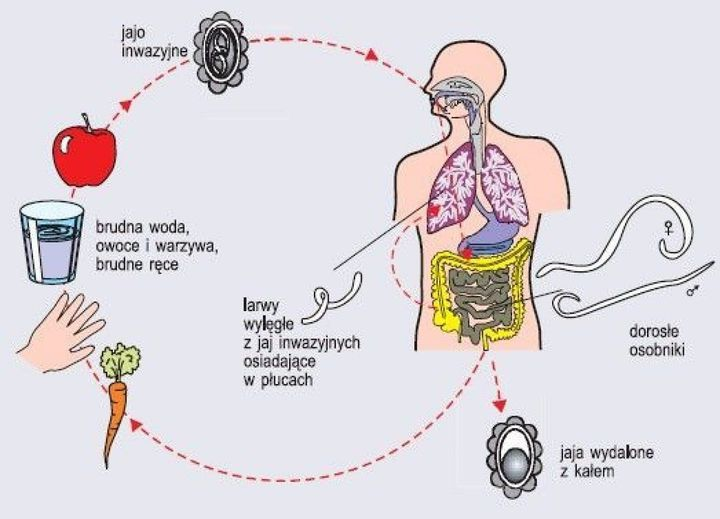
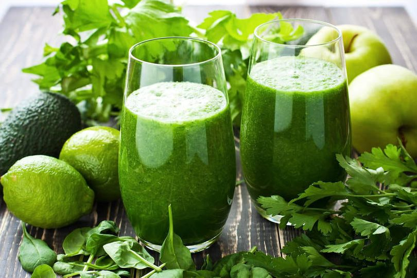

No i mamy w końcu wiosnę
No i mamy w końcu wiosnę, bardzo się cieszę z tego powodu bo to moja ukochana pora roku.Nie ma nic piękniejszego jak przyroda burząca się do życia, wszystko się zieleni tak i my budzimy się z zimowego snu :)Wiosna zawsze kojarzy się z porządkami szczególn...
Czytaj więcej

Kto nie lubi zjeść coś pysznego do południowej kawusi
Jestem łakomczuchem więc zawsze szukam wersji zdrowej szczególnie dla moich dzieci. Mam dla Was pyszną, zdrową i pożywną wersję Brownie nawet dla Vegan 😉Brownie z ciecierzycą i daktylami:Składniki:ciecierzyca1 słoik (540 g)daktyle1 szklanka (250 ml)masło...
Czytaj więcej

Chlorofil na straży zdrowia 🌿🌿🌿
Chlorofil to barwnik występujący w roślinach zielonych, pełniący kluczową rolę w procesie fotosyntezy- bez względu na formę w której występuje – najsilniej absorbuje światło w czerwonej oraz fioletowej części widma, najsłabiej zaś w jego części zielonej.C...
Czytaj więcej

Zbliża się lato 🌻co za tym idzie wyczekany urlop
Zbliża się lato 🌻🌻🌷co za tym idzie wyczekany urlop, wakacje, odpoczynek i leniwe opalanie ;🏖️🌅☀️Pawie każdy lubi beztrosko leniuchować na leżaku i czerpać przyjemność z gorących promieni słonecznych pamiętając o kosmetykach do opalania z filtrem UV. ...
Czytaj więcej

O niebezpiecznych składnikach kosmetyków do opalania
Obiecałam również że napiszę Wam co można stosować w zamian jako zdrową alternatywę 🍀🍀🍀 Bezpieczną i zdrową alternatywą będą naturalne oleje dobrej jakości najlepiej BIO tj.:➡️ olej kokosowy (2-4 SPF) – łagodzi podrażnienia, działa antybakteryjnie i na...
Czytaj więcej

Propilis naturalny lek na wirusy
🌿🌿Prozdrowotne właściwości propolisu inaczej kit pszczeli nie każdemu są znane.Ta naturalna, lepka substancja powstaje z połączenia żywicy z pączków drzew, głównie topoli czarnej, olchy oraz brzozy, i woskowatej wydzieliny owadów, zawierającej m.in. śli...
Czytaj więcej

>Pasożytami możemy zarazić się od drugiego człowieka
Pasożytami możemy zarazić się od drugiego człowieka – zarówno bezpośrednio jak i pośrednio, przez korzystanie ze wspólnych rzeczy a nawet zjedzeniu owoca na którym siedziała muchaâ€¼ï¸ Wiadomo gdzie lubią siadać muchy więc nie muszę szczegółowo tłumaczyć 😉�...
Czytaj więcej

Nalewka Ekstrakt Ziołowy Kojący Nerwy
🌿🌿Nalewka Ekstrakt Ziołowy Kojący Nerwy🌿🌿Któż z Nas nie jest narażony na stresujące sytuacje czy to w pracy , kłótnia z dzieckiem, z partnerem/partnerką czy inną bliską nam osobą Tak naprawdę nie da się całkowicie wykluczyć z naszego życia stresu ALE ...
Czytaj więcej
Wakacyjny niezbędnik, który warto zawsze mieć przy sobie
☀️Wakacyjny niezbędnik, który warto zawsze mieć przy sobie na urlopie 🌴🏖️⛵✅ Maść z witaminą A 1500 j.- idealna na oparzenia słoneczne oraz suchą skórę.✅ Maść nagietkowa- wspaniale regeneruje naskórka przy otarciach i oparzeniach słonecznych.✅Woda utleni...
Czytaj więcej

DETOKS 🌿OCZYSZCZANIE ORGANIZMU
Lato 🏖️🌞 to idealny czas na oczyszczenie, regenerację i wzmocnienie naszego organizmu na jesień. Szczególnie teraz w okresie pandemii. W okresie letnim mam duży wybór warzyw i owoców co ułatwi nam eliminacje produktów zawierających cukier, nabiał i wyro...
Czytaj więcej

EKO to nie tylko moda a styl życia
W dzisiejszym wpisie chcę Was zainspirować do produkcji własnego ekologicznego i bezpiecznego dla zdrowia proszku do prania 💚💚💚Dlaczego proszek własnej produkcji jest lepszy od chemicznego kupionego w sklepie 🤔🤔 Bo jest:✅ Tani✅ Idealny dla alergików✅...
Czytaj Więcej